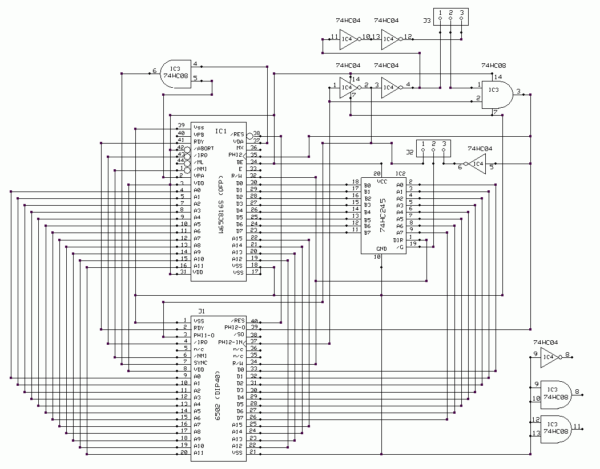
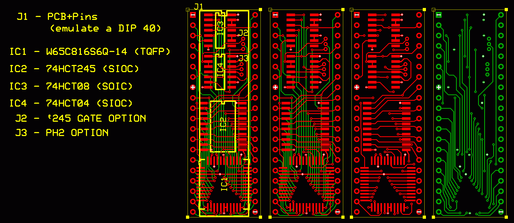

There has been some interest in using a WDC 65C816 processor in a system that was designed for a 6502. However, the two are not pin for pin compatible. Some form of adapter is required. With some suggestions from the users on the 6502 Forum, I created a working schematic for an adapter. IC3 and IC4 are used to create the two-phased clock output PH1 and PH2 that the 65816 does not generate. IC2 is used to keep the data bus at high-impedance during PH1.
Here is the Schematic:

Now, the hard part. We wanted to keep the size of our adapter as small as possible. By using SOIC versions of IC2,3,4, and the TQFP version of 65816, it became possible to squeeze the entire circuit into the size of a DIP40.
Here is a picture of my layout:

As you can see, there is not much room wasted!
If you are interested in building this adapter, the ExpressPCB schematic and layout files can be downloaded here: conv.zip
PLEASE NOTE: I have not actually built or tested this design. Use it at your own risk.
Daryl Rictor - April 16, 2004